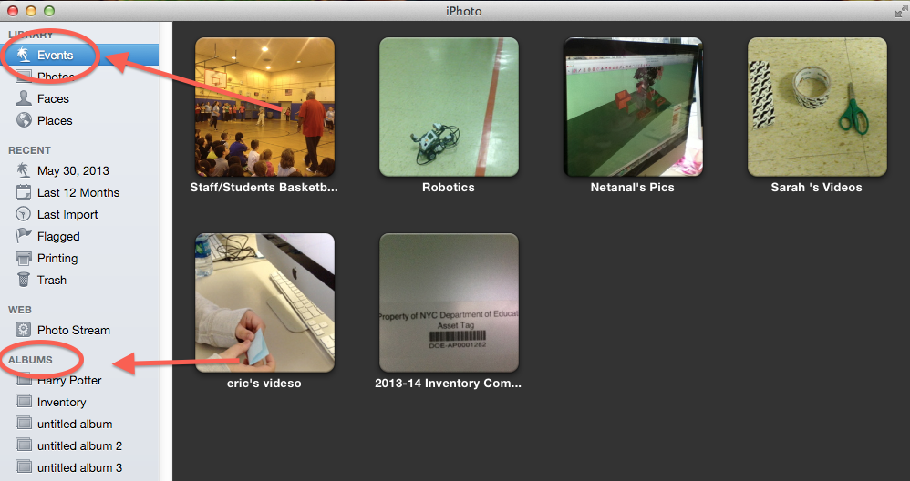

Putting it All Together
Now we are going to put all of our work together. We will take all of the Screenshots that we have gathered, and put them into a slideshow in iPhoto. We will add captions to the photos in iPhoto, to make our pictures more informative.We will use iPhoto Events AND Albums to do this.
Why Do We Use Albums in iPhoto?
In iPhoto it may seem like Events and Albums are the same thing. There are a few really important differences between them.
| Events | Albums |
|---|---|
| 1. If you delete a picture from an Event, the picture will no longer be in iPhoto. It will disappear from the Event, AND any Album it was in. | 1. If you delete a picture from an Album, it will still be in the Event, and any other album it was in. |
| 2. A Picture can only be in ONE Event. | 2. A Picture can be in as many Albums as you want. |
| 3. Pictures in Events can't really be put in a different order. | 3. Pictures in Albums can be switched around and put in any order you want. |
The last reason is the reason that we use Albums. We want to be able to put pictures in Slideshows in ANY order we want. THAT is why we make our slideshows from Albums, instead of from Events.
The first thing we need to do is add our photos to iPhoto. Last time, we dragged each of our pictures into iPhoto. This time, since all of our pictures are in one folder, we can just drag the folder into the iPhoto window. When we do this, iPhoto will create an Event with all of the pictures in it, and name the event whatever our folder was named.
Once we have done that, we can make an Album out of our Screenshots.
When you are finished, please fill out the form below. If you need Extra Help, scroll down to the bottom for a video.
Back to School Portal